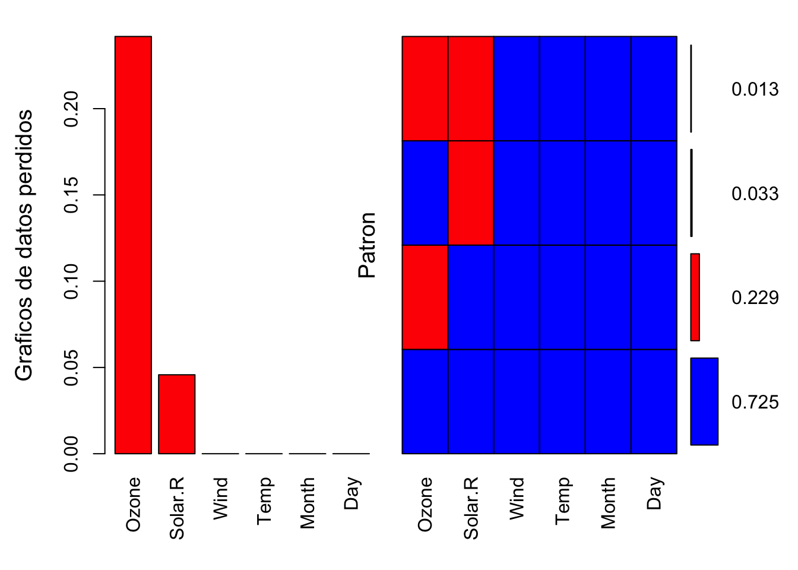
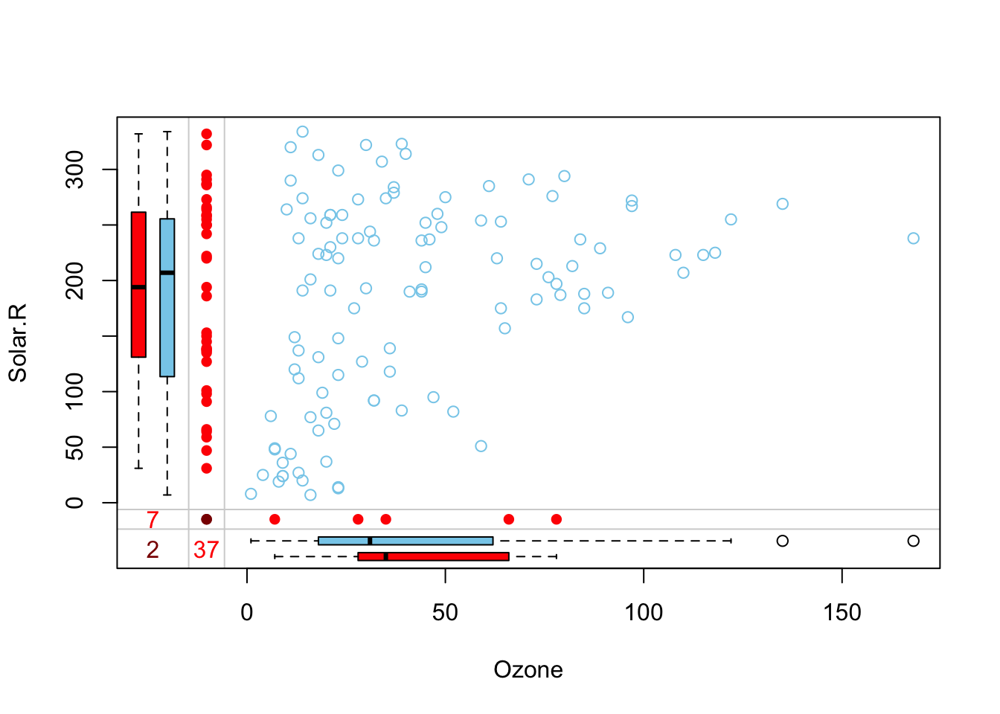
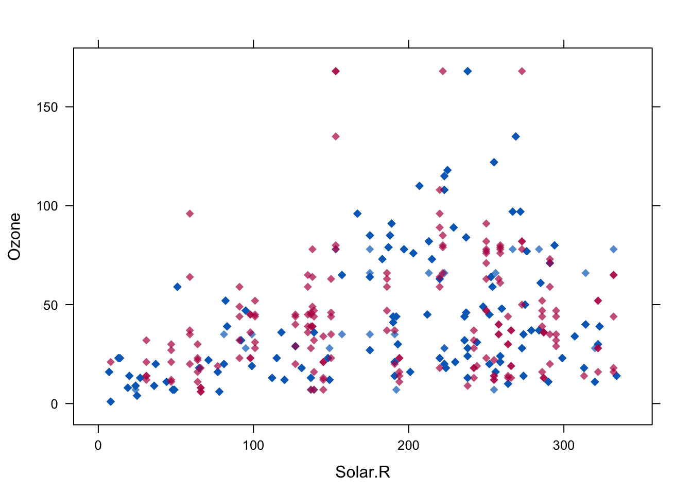
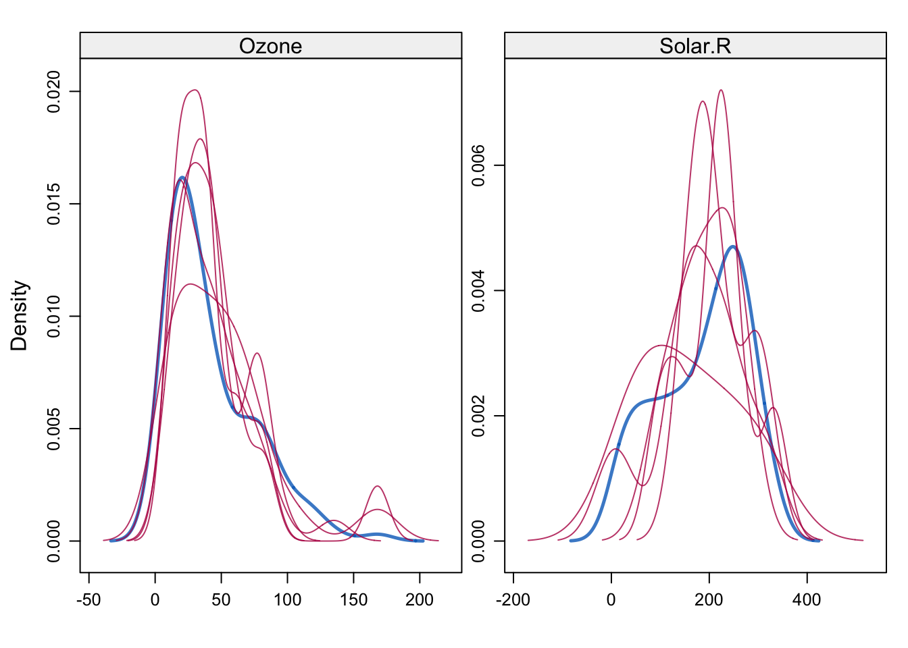
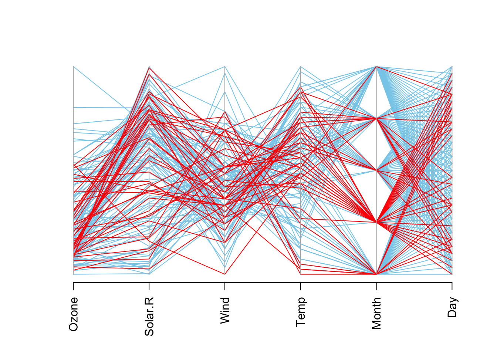

Lectura de Datos
joseangeldiazg
16/1/2018
Análisis exploratorio
#Funciones a usar
source("lecturaDatos.R")
datos<- lecturaDatos("./data","datos.csv")instancias <- nrow(datos)
instancias## [1] 20000variables <- ncol(datos)
variables## [1] 51Vamos a ver la estructura de los datos para ello, podemos usar funciones como:
#Vemos las priemeras 5
head(datos, 5)## separation propensity length PredSS_r1_.1 PredSS_r1 PredSS_r1_1
## 1 27 0.636381526 161 E E E
## 2 63 0.702477191 187 H H C
## 3 19 -0.892407793 185 C H H
## 4 36 0.161958287 495 C H H
## 5 145 -0.005589508 405 C C C
## PredSS_r2_.1 PredSS_r2 PrSS_fq_cn_H PrSS_fq_cn_E PrSS_fq_cn_C
## 1 C C 0.269 0.115 0.615
## 2 H H 0.694 0.000 0.306
## 3 C C 0.333 0.000 0.667
## 4 E E 0.229 0.086 0.686
## 5 H H 0.354 0.125 0.521
## PrCN_fq_cn_0 PrRCH_fq_cn0 PrRCH_fq_cn1 PrSA_fq_cn_0 PrSA_fq_cn_4
## 1 0.308 0.346 0.192 0.308 0.385
## 2 0.161 0.194 0.161 0.290 0.161
## 3 0.056 0.222 0.056 0.278 0.167
## 4 0.229 0.343 0.086 0.200 0.286
## 5 0.062 0.167 0.076 0.396 0.097
## PrRCH_r1_.1 PrRCH_r1 PrRCH_r1_1 PrRCH_r2_.1 PrRCH_r2 PrRCH_r2_1
## 1 3 3 4 3 3 0
## 2 3 0 1 3 3 3
## 3 3 1 3 0 3 0
## 4 3 3 3 3 3 3
## 5 4 4 3 3 3 0
## PrCN_r1_.1 PrCN_r1 PrCN_r1_1 PrCN_r2 PrSA_r1 PrSA_r2_.1 PrSA_r2
## 1 4 4 4 3 0 3 1
## 2 3 1 1 1 4 3 3
## 3 3 3 4 3 3 4 1
## 4 3 3 1 4 1 0 0
## 5 <NA> 4 3 3 1 0 2
## PrSA_r2_1 PrRCH_fq_gl0 PrRCH_fq_gl4 AA_fq_cn_A AA_fq_cn_D AA_fq_cn_E
## 1 4 0.230 0.230 0.115 0.077 0.038
## 2 0 0.209 0.128 0.177 0.081 0.097
## 3 3 0.346 0.038 0.222 0.000 0.000
## 4 0 0.285 0.115 0.057 0.029 0.057
## 5 4 0.151 0.316 0.083 0.035 0.062
## AA_fq_cn_I AA_fq_cn_F PrSS_fq_gl_H PrCN_fq_gl_0 PrSA_fq_gl_0
## 1 0.077 0.038 0.130 0.106 0.354
## 2 0.081 0.016 0.775 0.209 0.278
## 3 0.056 0.000 0.416 0.205 0.151
## 4 0.029 0.029 0.168 0.186 0.182
## 5 0.049 0.035 0.375 0.067 0.383
## PSSM_r1_.4_A PSSM_r1_.4_N PSSM_r1_0_D PSSM_r1_1_W PSSM_r2_0_A
## 1 4 4 -6 -4 -5
## 2 2 -3 NA -7 4
## 3 -1 2 1 -2 -1
## 4 0 1 -2 -2 -5
## 5 -5 -4 -5 -1 -4
## PSSM_cn_.2_A PSSM_cn_.2_T PSSM_cn_0_H PSSM_cn_2_D PSSM_cn_2_V class
## 1 2 -5 2 -5 -5 negative
## 2 7 -3 1 0 -10 negative
## 3 -1 -1 -2 5 -3 positive
## 4 -3 -3 0 3 -1 positive
## 5 5 0 -1 -5 6 negative#Vemos las 5 ultimas
tail(datos,5)## separation propensity length PredSS_r1_.1 PredSS_r1 PredSS_r1_1
## 19996 66 0.03331837 642 H H H
## 19997 22 -0.57829209 431 C E E
## 19998 100 -0.94417931 193 H H H
## 19999 13 -1.62414913 143 H H C
## 20000 129 -0.12260333 172 C C C
## PredSS_r2_.1 PredSS_r2 PrSS_fq_cn_H PrSS_fq_cn_E PrSS_fq_cn_C
## 19996 H H 0.738 0.062 0.200
## 19997 C C 0.000 0.524 0.476
## 19998 C C 0.434 0.263 0.303
## 19999 C C 0.000 0.417 0.583
## 20000 C C 0.016 0.234 0.750
## PrCN_fq_cn_0 PrRCH_fq_cn0 PrRCH_fq_cn1 PrSA_fq_cn_0 PrSA_fq_cn_4
## 19996 0.123 0.154 0.092 0.292 0.108
## 19997 0.143 0.381 0.095 0.190 0.429
## 19998 0.222 0.283 0.111 0.202 0.222
## 19999 0.083 0.250 0.083 0.333 0.250
## 20000 0.438 0.547 0.125 0.117 NA
## PrRCH_r1_.1 PrRCH_r1 PrRCH_r1_1 PrRCH_r2_.1 PrRCH_r2 PrRCH_r2_1
## 19996 1 3 3 3 3 3
## 19997 3 3 3 0 0 3
## 19998 3 0 1 0 0 0
## 19999 1 0 1 0 0 2
## 20000 0 0 0 0 0 3
## PrCN_r1_.1 PrCN_r1 PrCN_r1_1 PrCN_r2 PrSA_r1 PrSA_r2_.1 PrSA_r2
## 19996 1 3 3 4 0 3 0
## 19997 3 3 3 1 3 4 4
## 19998 2 0 1 0 3 4 4
## 19999 2 0 1 1 4 4 4
## 20000 0 0 0 0 4 4 4
## PrSA_r2_1 PrRCH_fq_gl0 PrRCH_fq_gl4 AA_fq_cn_A AA_fq_cn_D AA_fq_cn_E
## 19996 0 0.212 0.235 0.154 0.046 0.123
## 19997 4 0.362 0.095 0.000 0.143 0.095
## 19998 3 0.249 0.067 0.091 0.040 0.091
## 19999 3 0.259 0.000 0.083 0.083 0.167
## 20000 4 0.628 0.000 0.102 0.031 0.062
## AA_fq_cn_I AA_fq_cn_F PrSS_fq_gl_H PrCN_fq_gl_0 PrSA_fq_gl_0
## 19996 0.046 0.015 0.358 0.187 0.274
## 19997 0.000 0.048 0.009 0.172 0.139
## 19998 0.030 0.030 0.280 0.223 0.223
## 19999 0.000 0.000 0.322 0.189 0.245
## 20000 NA 0.039 0.012 0.547 0.087
## PSSM_r1_.4_A PSSM_r1_.4_N PSSM_r1_0_D PSSM_r1_1_W PSSM_r2_0_A
## 19996 -1 -2 -6 -6 2
## 19997 0 1 -1 0 -1
## 19998 0 -2 0 -5 1
## 19999 0 1 2 -2 -3
## 20000 -1 -2 0 -1 2
## PSSM_cn_.2_A PSSM_cn_.2_T PSSM_cn_0_H PSSM_cn_2_D PSSM_cn_2_V
## 19996 6 -2 -5 -4 -1
## 19997 -1 -1 -5 -2 0
## 19998 -5 -5 1 -4 0
## 19999 -1 0 -2 -5 -1
## 20000 -3 0 -4 -1 1
## class
## 19996 negative
## 19997 negative
## 19998 negative
## 19999 negative
## 20000 negative#Nombres de las variables
names(datos)## [1] "separation" "propensity" "length" "PredSS_r1_.1"
## [5] "PredSS_r1" "PredSS_r1_1" "PredSS_r2_.1" "PredSS_r2"
## [9] "PrSS_fq_cn_H" "PrSS_fq_cn_E" "PrSS_fq_cn_C" "PrCN_fq_cn_0"
## [13] "PrRCH_fq_cn0" "PrRCH_fq_cn1" "PrSA_fq_cn_0" "PrSA_fq_cn_4"
## [17] "PrRCH_r1_.1" "PrRCH_r1" "PrRCH_r1_1" "PrRCH_r2_.1"
## [21] "PrRCH_r2" "PrRCH_r2_1" "PrCN_r1_.1" "PrCN_r1"
## [25] "PrCN_r1_1" "PrCN_r2" "PrSA_r1" "PrSA_r2_.1"
## [29] "PrSA_r2" "PrSA_r2_1" "PrRCH_fq_gl0" "PrRCH_fq_gl4"
## [33] "AA_fq_cn_A" "AA_fq_cn_D" "AA_fq_cn_E" "AA_fq_cn_I"
## [37] "AA_fq_cn_F" "PrSS_fq_gl_H" "PrCN_fq_gl_0" "PrSA_fq_gl_0"
## [41] "PSSM_r1_.4_A" "PSSM_r1_.4_N" "PSSM_r1_0_D" "PSSM_r1_1_W"
## [45] "PSSM_r2_0_A" "PSSM_cn_.2_A" "PSSM_cn_.2_T" "PSSM_cn_0_H"
## [49] "PSSM_cn_2_D" "PSSM_cn_2_V" "class"Para ver un reumen de las variables y sus datos estadísticos:
summary(datos)## separation propensity length PredSS_r1_.1
## Min. : 6.00 Min. :-1.88816 Min. : 50.0 C :9556
## 1st Qu.: 26.00 1st Qu.:-0.51366 1st Qu.: 144.0 E :4625
## Median : 57.00 Median :-0.16855 Median : 209.0 H :5434
## Mean : 93.67 Mean :-0.07537 Mean : 286.4 X : 185
## 3rd Qu.: 114.00 3rd Qu.: 0.21625 3rd Qu.: 356.0 NA's: 200
## Max. :1221.00 Max. : 2.63886 Max. :1244.0
##
## PredSS_r1 PredSS_r1_1 PredSS_r2_.1 PredSS_r2 PrSS_fq_cn_H
## C:9631 C :9545 C :9433 C:9560 Min. :0.0000
## E:4841 E :4785 E :4766 E:4823 1st Qu.:0.0000
## H:5528 H :5470 H :5601 H:5617 Median :0.2690
## NA's: 200 NA's: 200 Mean :0.2833
## 3rd Qu.:0.4290
## Max. :1.0000
## NA's :200
## PrSS_fq_cn_E PrSS_fq_cn_C PrCN_fq_cn_0 PrRCH_fq_cn0
## Min. :0.0000 Min. :0.000 Min. :0.0000 Min. :0.000
## 1st Qu.:0.0630 1st Qu.:0.391 1st Qu.:0.0970 1st Qu.:0.199
## Median :0.1740 Median :0.497 Median :0.1670 Median :0.263
## Mean :0.2166 Mean :0.500 Mean :0.1965 Mean :0.275
## 3rd Qu.:0.3330 3rd Qu.:0.600 3rd Qu.:0.2640 3rd Qu.:0.341
## Max. :1.0000 Max. :1.000 Max. :1.0000 Max. :1.000
## NA's :200 NA's :200 NA's :200 NA's :200
## PrRCH_fq_cn1 PrSA_fq_cn_0 PrSA_fq_cn_4 PrRCH_r1_.1
## Min. :0.0000 Min. :0.0000 Min. :0.0000 0 :5181
## 1st Qu.:0.0940 1st Qu.:0.1500 1st Qu.:0.1450 1 :2563
## Median :0.1300 Median :0.2220 Median :0.2180 2 : 833
## Mean :0.1396 Mean :0.2313 Mean :0.2441 3 :8486
## 3rd Qu.:0.1780 3rd Qu.:0.3020 3rd Qu.:0.3150 4 :2551
## Max. :0.8000 Max. :1.0000 Max. :1.0000 X : 186
## NA's :200 NA's :200 NA's :200 NA's: 200
## PrRCH_r1 PrRCH_r1_1 PrRCH_r2_.1 PrRCH_r2
## Min. :0.000 Min. :0.000 Min. :0.000 Min. :0.00
## 1st Qu.:1.000 1st Qu.:0.000 1st Qu.:0.000 1st Qu.:1.00
## Median :3.000 Median :3.000 Median :3.000 Median :3.00
## Mean :2.079 Mean :2.036 Mean :2.018 Mean :2.07
## 3rd Qu.:3.000 3rd Qu.:3.000 3rd Qu.:3.000 3rd Qu.:3.00
## Max. :4.000 Max. :4.000 Max. :4.000 Max. :4.00
## NA's :200 NA's :200
## PrRCH_r2_1 PrCN_r1_.1 PrCN_r1 PrCN_r1_1 PrCN_r2
## 0 :5252 0 :3634 Min. :0.000 Min. :0.000 Min. :0.00
## 1 :2718 1 :3089 1st Qu.:1.000 1st Qu.:1.000 1st Qu.:1.00
## 2 : 863 2 :1575 Median :3.000 Median :3.000 Median :3.00
## 3 :8370 3 :5999 Mean :2.366 Mean :2.306 Mean :2.36
## 4 :2405 4 :5316 3rd Qu.:4.000 3rd Qu.:4.000 3rd Qu.:4.00
## X : 192 X : 187 Max. :4.000 Max. :4.000 Max. :4.00
## NA's: 200 NA's: 200 NA's :200
## PrSA_r1 PrSA_r2_.1 PrSA_r2 PrSA_r2_1
## Min. :0.00 Min. :0.000 Min. :0.000 0 :4713
## 1st Qu.:0.00 1st Qu.:1.000 1st Qu.:0.000 1 :2879
## Median :3.00 Median :3.000 Median :3.000 2 :1136
## Mean :2.07 Mean :2.158 Mean :2.076 3 :6305
## 3rd Qu.:3.00 3rd Qu.:3.000 3rd Qu.:3.000 4 :4575
## Max. :4.00 Max. :4.000 Max. :4.000 X : 192
## NA's :200 NA's: 200
## PrRCH_fq_gl0 PrRCH_fq_gl4 AA_fq_cn_A AA_fq_cn_D
## Min. :0.0570 Min. :0.0000 Min. :0.00000 Min. :0.00000
## 1st Qu.:0.2280 1st Qu.:0.0240 1st Qu.:0.04300 1st Qu.:0.03400
## Median :0.2740 Median :0.1000 Median :0.07600 Median :0.05700
## Mean :0.2844 Mean :0.1141 Mean :0.07983 Mean :0.05917
## 3rd Qu.:0.3390 3rd Qu.:0.1830 3rd Qu.:0.10800 3rd Qu.:0.07700
## Max. :0.7900 Max. :0.6340 Max. :0.66700 Max. :0.66700
## NA's :200 NA's :200 NA's :200 NA's :200
## AA_fq_cn_E AA_fq_cn_I AA_fq_cn_F PrSS_fq_gl_H
## Min. :0.00000 Min. :0.00000 Min. :0.00000 Min. :0.0000
## 1st Qu.:0.03800 1st Qu.:0.02800 1st Qu.:0.01500 1st Qu.:0.1630
## Median :0.06300 Median :0.05100 Median :0.03600 Median :0.2860
## Mean :0.06772 Mean :0.05479 Mean :0.03988 Mean :0.2887
## 3rd Qu.:0.09000 3rd Qu.:0.07500 3rd Qu.:0.05600 3rd Qu.:0.3910
## Max. :0.50000 Max. :0.40000 Max. :0.40000 Max. :0.9700
## NA's :200 NA's :200 NA's :200 NA's :200
## PrCN_fq_gl_0 PrSA_fq_gl_0 PSSM_r1_.4_A PSSM_r1_.4_N
## Min. :0.0130 Min. :0.0000 Min. :-11.0000 Min. :-12.000
## 1st Qu.:0.1340 1st Qu.:0.1690 1st Qu.: -2.0000 1st Qu.: -3.000
## Median :0.1810 Median :0.2210 Median : -1.0000 Median : -1.000
## Mean :0.2061 Mean :0.2288 Mean : -0.8582 Mean : -1.513
## 3rd Qu.:0.2620 3rd Qu.:0.2780 3rd Qu.: 0.0000 3rd Qu.: 0.000
## Max. :0.7900 Max. :0.6940 Max. : 7.0000 Max. : 9.000
## NA's :200 NA's :200 NA's :200 NA's :200
## PSSM_r1_0_D PSSM_r1_1_W PSSM_r2_0_A PSSM_cn_.2_A
## Min. :-13.000 Min. :-12.000 Min. :-12.0000 Min. :-13.000
## 1st Qu.: -4.000 1st Qu.: -5.000 1st Qu.: -2.0000 1st Qu.: -2.000
## Median : -2.000 Median : -4.000 Median : -1.0000 Median : -1.000
## Mean : -1.919 Mean : -3.052 Mean : -0.8988 Mean : -0.872
## 3rd Qu.: 0.000 3rd Qu.: -2.000 3rd Qu.: 0.0000 3rd Qu.: 0.000
## Max. : 9.000 Max. : 13.000 Max. : 7.0000 Max. : 8.000
## NA's :200 NA's :200 NA's :200 NA's :200
## PSSM_cn_.2_T PSSM_cn_0_H PSSM_cn_2_D PSSM_cn_2_V
## Min. :-13.0000 Min. :-12.000 Min. :-14.000 Min. :-13.000
## 1st Qu.: -2.0000 1st Qu.: -3.000 1st Qu.: -4.000 1st Qu.: -3.000
## Median : -1.0000 Median : -2.000 Median : -2.000 Median : -2.000
## Mean : -0.9923 Mean : -1.697 Mean : -1.667 Mean : -1.393
## 3rd Qu.: 0.0000 3rd Qu.: 0.000 3rd Qu.: 1.000 3rd Qu.: 0.000
## Max. : 8.0000 Max. : 12.000 Max. : 9.000 Max. : 8.000
## NA's :200 NA's :200 NA's :200 NA's :200
## class
## negative:14010
## positive: 5990
##
##
##
##
## Una función similar es describe del paquete Hmisc:
library("Hmisc")
describe(datos[1:3])## datos[1:3]
##
## 3 Variables 20000 Observations
## ---------------------------------------------------------------------------
## separation
## n missing distinct Info Mean Gmd .05 .10
## 20000 0 706 1 93.67 99.4 9.0 13.0
## .25 .50 .75 .90 .95
## 26.0 57.0 114.0 210.1 308.0
##
## lowest : 6 7 8 9 10, highest: 1098 1142 1165 1166 1221
## ---------------------------------------------------------------------------
## propensity
## n missing distinct Info Mean Gmd .05 .10
## 20000 0 400 1 -0.07537 0.6824 -0.8201 -0.7404
## .25 .50 .75 .90 .95
## -0.5137 -0.1685 0.2162 0.8423 1.1630
##
## lowest : -1.888157 -1.624149 -1.444294 -1.442635 -1.434026
## highest: 1.356595 1.402798 1.410586 1.513896 2.638864
## ---------------------------------------------------------------------------
## length
## n missing distinct Info Mean Gmd .05 .10
## 20000 0 337 1 286.4 216.7 88 106
## .25 .50 .75 .90 .95
## 144 209 356 555 764
##
## lowest : 50 51 52 53 54, highest: 764 822 865 954 1244
## ---------------------------------------------------------------------------Con esta primera toma de contacto podemos ver el tipo de datos, si tenemos valores perdidos, sus distribuciones…
Valores perdidos
El primer paso sería ver si estos valores perdidos son aleatorios o si siguen alguna distribución. De igual modo, para manejar esto podríamos utilizar estas aproximaciones:
- Utilizar técnicas robustas de minería de datos que no sean sensibles a MV.
- Eliminar las instancias donde aparezcan datos perdidos. (función na.omit=T)
- Asignar un valor fijo a todos los MV.
- Asignar un valor de referencia, como la media, la mediana..
- Técnicas más sofisticadas como usar un predictor o regresor sobre la variable con datos perdidos en función de las demás.
El primer paso será obtener el porcentaje de variables con datos perdidos en cada instancia:
res<-apply(datos, 1, function(x) sum(is.na(x)))/ncol(datos)*100
res## [1] 0.000000 1.960784 0.000000 0.000000 1.960784 0.000000 0.000000
## [8] 0.000000 0.000000 0.000000 1.960784 0.000000 0.000000 1.960784
## [15] 0.000000 0.000000 0.000000 0.000000 0.000000 1.960784 1.960784
## [22] 1.960784 0.000000 0.000000 0.000000 0.000000 1.960784 0.000000
## [29] 0.000000 0.000000 3.921569 1.960784 0.000000 1.960784 1.960784
## [36] 5.882353 3.921569 0.000000 0.000000 0.000000 1.960784 1.960784
## [43] 1.960784 3.921569 0.000000 0.000000 1.960784 0.000000 0.000000
## [50] 0.000000 1.960784 0.000000 0.000000 1.960784 1.960784 1.960784
## [57] 0.000000 0.000000 1.960784 0.000000 0.000000 1.960784 1.960784
## [64] 0.000000 0.000000 0.000000 1.960784 0.000000 0.000000 0.000000
## [71] 1.960784 0.000000 0.000000 0.000000 0.000000 0.000000 0.000000
## [78] 0.000000 3.921569 1.960784 0.000000 1.960784 1.960784 0.000000
## [85] 0.000000 3.921569 0.000000 1.960784 0.000000 0.000000 0.000000
## [92] 0.000000 0.000000 1.960784 0.000000 0.000000 0.000000 0.000000
## [99] 0.000000 1.960784 0.000000 0.000000 0.000000 0.000000 0.000000
## [106] 0.000000 0.000000 0.000000 0.000000 0.000000 3.921569 0.000000
## [113] 0.000000 1.960784 1.960784 0.000000 0.000000 0.000000 1.960784
## [120] 0.000000 0.000000 0.000000 1.960784 0.000000 0.000000 1.960784
## [127] 0.000000 0.000000 0.000000 0.000000 1.960784 1.960784 0.000000
## [134] 0.000000 0.000000 0.000000 0.000000 0.000000 1.960784 0.000000
## [141] 3.921569 0.000000 0.000000 0.000000 0.000000 0.000000 0.000000
## [148] 0.000000 1.960784 0.000000 0.000000 0.000000 0.000000 0.000000
## [155] 0.000000 1.960784 1.960784 0.000000 0.000000 0.000000 1.960784
## [162] 1.960784 0.000000 1.960784 0.000000 0.000000 0.000000 0.000000
## [169] 1.960784 0.000000 1.960784 3.921569 1.960784 1.960784 0.000000
## [176] 0.000000 0.000000 0.000000 0.000000 0.000000 0.000000 0.000000
## [183] 0.000000 0.000000 5.882353 0.000000 0.000000 1.960784 0.000000
## [190] 3.921569 0.000000 0.000000 0.000000 0.000000 1.960784 0.000000
## [197] 0.000000 0.000000 0.000000 0.000000 0.000000 1.960784 0.000000
## [204] 0.000000 0.000000 0.000000 1.960784 0.000000 3.921569 0.000000
## [211] 0.000000 1.960784 1.960784 0.000000 0.000000 0.000000 0.000000
## [218] 0.000000 0.000000 1.960784 1.960784 0.000000 1.960784 0.000000
## [225] 1.960784 3.921569 0.000000 1.960784 0.000000 0.000000 1.960784
## [232] 3.921569 1.960784 1.960784 1.960784 0.000000 0.000000 0.000000
## [239] 0.000000 1.960784 0.000000 0.000000 1.960784 1.960784 0.000000
## [246] 1.960784 0.000000 0.000000 0.000000 1.960784 0.000000 0.000000
## [253] 0.000000 0.000000 0.000000 1.960784 0.000000 0.000000 1.960784
## [260] 1.960784 0.000000 0.000000 1.960784 1.960784 0.000000 0.000000
## [267] 0.000000 0.000000 3.921569 0.000000 0.000000 0.000000 1.960784
## [274] 0.000000 1.960784 3.921569 1.960784 1.960784 0.000000 0.000000
## [281] 0.000000 0.000000 1.960784 0.000000 3.921569 0.000000 1.960784
## [288] 0.000000 1.960784 0.000000 0.000000 0.000000 0.000000 0.000000
## [295] 1.960784 3.921569 0.000000 0.000000 0.000000 1.960784 7.843137
## [302] 0.000000 1.960784 1.960784 1.960784 0.000000 0.000000 0.000000
## [309] 0.000000 0.000000 3.921569 0.000000 0.000000 0.000000 3.921569
## [316] 1.960784 0.000000 0.000000 0.000000 0.000000 0.000000 0.000000
## [323] 3.921569 0.000000 0.000000 0.000000 3.921569 0.000000 0.000000
## [330] 0.000000 1.960784 3.921569 0.000000 0.000000 1.960784 0.000000
## [337] 1.960784 0.000000 1.960784 0.000000 0.000000 1.960784 1.960784
## [344] 0.000000 0.000000 0.000000 0.000000 0.000000 0.000000 0.000000
## [351] 3.921569 0.000000 1.960784 1.960784 0.000000 3.921569 0.000000
## [358] 0.000000 0.000000 1.960784 1.960784 0.000000 0.000000 0.000000
## [365] 0.000000 1.960784 0.000000 0.000000 1.960784 1.960784 0.000000
## [372] 0.000000 0.000000 0.000000 1.960784 0.000000 0.000000 1.960784
## [379] 0.000000 0.000000 0.000000 0.000000 0.000000 3.921569 1.960784
## [386] 0.000000 1.960784 0.000000 1.960784 0.000000 0.000000 0.000000
## [393] 1.960784 1.960784 0.000000 0.000000 0.000000 0.000000 0.000000
## [400] 0.000000 0.000000 1.960784 0.000000 0.000000 3.921569 0.000000
## [407] 1.960784 0.000000 0.000000 0.000000 0.000000 0.000000 0.000000
## [414] 1.960784 0.000000 0.000000 0.000000 0.000000 1.960784 0.000000
## [421] 0.000000 0.000000 0.000000 0.000000 0.000000 0.000000 0.000000
## [428] 0.000000 0.000000 0.000000 0.000000 0.000000 0.000000 0.000000
## [435] 0.000000 0.000000 0.000000 0.000000 0.000000 1.960784 1.960784
## [442] 0.000000 0.000000 1.960784 0.000000 0.000000 0.000000 0.000000
## [449] 0.000000 1.960784 0.000000 0.000000 0.000000 0.000000 0.000000
## [456] 1.960784 0.000000 0.000000 0.000000 0.000000 0.000000 0.000000
## [463] 0.000000 0.000000 0.000000 1.960784 0.000000 0.000000 0.000000
## [470] 0.000000 1.960784 0.000000 1.960784 0.000000 0.000000 0.000000
## [477] 1.960784 0.000000 0.000000 0.000000 1.960784 0.000000 0.000000
## [484] 5.882353 0.000000 0.000000 1.960784 1.960784 0.000000 0.000000
## [491] 1.960784 0.000000 1.960784 0.000000 0.000000 0.000000 0.000000
## [498] 1.960784 0.000000 0.000000 3.921569 1.960784 0.000000 0.000000
## [505] 0.000000 0.000000 0.000000 1.960784 0.000000 0.000000 1.960784
## [512] 1.960784 3.921569 0.000000 0.000000 0.000000 0.000000 0.000000
## [519] 0.000000 0.000000 0.000000 0.000000 1.960784 1.960784 0.000000
## [526] 1.960784 0.000000 1.960784 0.000000 0.000000 1.960784 1.960784
## [533] 1.960784 1.960784 0.000000 3.921569 0.000000 1.960784 1.960784
## [540] 0.000000 0.000000 0.000000 0.000000 0.000000 0.000000 0.000000
## [547] 3.921569 0.000000 0.000000 0.000000 0.000000 3.921569 0.000000
## [554] 0.000000 5.882353 0.000000 0.000000 0.000000 0.000000 0.000000
## [561] 0.000000 0.000000 0.000000 0.000000 0.000000 0.000000 0.000000
## [568] 0.000000 0.000000 0.000000 0.000000 1.960784 0.000000 1.960784
## [575] 1.960784 0.000000 0.000000 0.000000 1.960784 1.960784 0.000000
## [582] 1.960784 0.000000 0.000000 0.000000 1.960784 0.000000 0.000000
## [589] 0.000000 0.000000 0.000000 0.000000 1.960784 0.000000 1.960784
## [596] 0.000000 0.000000 5.882353 1.960784 0.000000 0.000000 0.000000
## [603] 1.960784 1.960784 0.000000 0.000000 0.000000 3.921569 1.960784
## [610] 0.000000 0.000000 0.000000 0.000000 0.000000 0.000000 0.000000
## [617] 1.960784 0.000000 1.960784 1.960784 0.000000 0.000000 0.000000
## [624] 0.000000 0.000000 1.960784 0.000000 1.960784 0.000000 0.000000
## [631] 1.960784 0.000000 0.000000 1.960784 1.960784 0.000000 0.000000
## [638] 0.000000 0.000000 1.960784 0.000000 0.000000 1.960784 0.000000
## [645] 0.000000 0.000000 1.960784 0.000000 0.000000 0.000000 1.960784
## [652] 0.000000 1.960784 0.000000 0.000000 0.000000 0.000000 0.000000
## [659] 0.000000 1.960784 1.960784 0.000000 0.000000 0.000000 0.000000
## [666] 0.000000 1.960784 0.000000 0.000000 0.000000 0.000000 0.000000
## [673] 0.000000 0.000000 1.960784 1.960784 0.000000 0.000000 0.000000
## [680] 0.000000 1.960784 0.000000 0.000000 0.000000 3.921569 1.960784
## [687] 0.000000 0.000000 0.000000 0.000000 1.960784 1.960784 0.000000
## [694] 1.960784 0.000000 0.000000 0.000000 1.960784 0.000000 0.000000
## [701] 1.960784 3.921569 0.000000 3.921569 1.960784 0.000000 0.000000
## [708] 0.000000 0.000000 0.000000 1.960784 0.000000 1.960784 1.960784
## [715] 0.000000 3.921569 0.000000 0.000000 0.000000 5.882353 1.960784
## [722] 0.000000 0.000000 0.000000 0.000000 1.960784 0.000000 1.960784
## [729] 0.000000 0.000000 0.000000 0.000000 0.000000 1.960784 1.960784
## [736] 0.000000 1.960784 1.960784 0.000000 0.000000 1.960784 0.000000
## [743] 3.921569 0.000000 0.000000 0.000000 0.000000 1.960784 0.000000
## [750] 3.921569 1.960784 0.000000 0.000000 0.000000 3.921569 1.960784
## [757] 1.960784 0.000000 3.921569 1.960784 0.000000 1.960784 1.960784
## [764] 0.000000 0.000000 0.000000 0.000000 0.000000 0.000000 1.960784
## [771] 1.960784 0.000000 1.960784 0.000000 3.921569 0.000000 0.000000
## [778] 0.000000 0.000000 1.960784 1.960784 0.000000 0.000000 0.000000
## [785] 0.000000 0.000000 0.000000 0.000000 0.000000 0.000000 0.000000
## [792] 1.960784 1.960784 0.000000 0.000000 0.000000 1.960784 0.000000
## [799] 1.960784 3.921569 0.000000 3.921569 0.000000 1.960784 0.000000
## [806] 0.000000 3.921569 0.000000 0.000000 0.000000 0.000000 1.960784
## [813] 1.960784 0.000000 0.000000 0.000000 0.000000 0.000000 0.000000
## [820] 0.000000 0.000000 0.000000 0.000000 1.960784 0.000000 1.960784
## [827] 0.000000 0.000000 1.960784 1.960784 0.000000 0.000000 3.921569
## [834] 0.000000 1.960784 1.960784 0.000000 0.000000 0.000000 0.000000
## [841] 0.000000 0.000000 0.000000 0.000000 1.960784 3.921569 0.000000
## [848] 1.960784 0.000000 1.960784 1.960784 0.000000 1.960784 0.000000
## [855] 1.960784 0.000000 0.000000 0.000000 0.000000 0.000000 0.000000
## [862] 0.000000 0.000000 3.921569 0.000000 0.000000 1.960784 0.000000
## [869] 1.960784 0.000000 0.000000 0.000000 0.000000 1.960784 0.000000
## [876] 0.000000 0.000000 0.000000 0.000000 3.921569 0.000000 1.960784
## [883] 0.000000 0.000000 0.000000 0.000000 0.000000 0.000000 0.000000
## [890] 0.000000 0.000000 1.960784 0.000000 0.000000 0.000000 1.960784
## [897] 1.960784 1.960784 1.960784 0.000000 3.921569 0.000000 1.960784
## [904] 1.960784 1.960784 0.000000 0.000000 0.000000 1.960784 0.000000
## [911] 3.921569 1.960784 0.000000 0.000000 0.000000 1.960784 0.000000
## [918] 0.000000 0.000000 0.000000 0.000000 0.000000 0.000000 0.000000
## [925] 3.921569 0.000000 0.000000 0.000000 0.000000 0.000000 0.000000
## [932] 1.960784 0.000000 0.000000 0.000000 0.000000 3.921569 0.000000
## [939] 3.921569 0.000000 0.000000 0.000000 0.000000 0.000000 0.000000
## [946] 1.960784 0.000000 1.960784 0.000000 0.000000 1.960784 0.000000
## [953] 0.000000 1.960784 0.000000 0.000000 0.000000 0.000000 0.000000
## [960] 0.000000 0.000000 0.000000 1.960784 0.000000 0.000000 0.000000
## [967] 1.960784 0.000000 0.000000 0.000000 1.960784 0.000000 1.960784
## [974] 0.000000 1.960784 0.000000 0.000000 0.000000 0.000000 0.000000
## [981] 0.000000 1.960784 0.000000 1.960784 0.000000 1.960784 1.960784
## [988] 0.000000 0.000000 3.921569 0.000000 1.960784 0.000000 0.000000
## [995] 0.000000 1.960784 1.960784 0.000000 1.960784 0.000000
## [ reached getOption("max.print") -- omitted 19000 entries ]Vamos a marcar como instancias “malas” aquellas que tienen mas de un 5% de valores perdidos.
mal<-(res>5)
filtrados<- datos[!mal,]
filtrados## separation propensity length PredSS_r1_.1 PredSS_r1 PredSS_r1_1
## 1 27 0.636381526 161 E E E
## 2 63 0.702477191 187 H H C
## 3 19 -0.892407793 185 C H H
## 4 36 0.161958287 495 C H H
## 5 145 -0.005589508 405 C C C
## 6 170 -0.278919206 412 H H H
## 7 112 -0.806811662 244 C C C
## 8 25 0.339083541 134 C C C
## 9 12 0.145021229 148 C C C
## 10 63 1.356594948 342 E E C
## 11 134 -0.498801547 492 C C C
## 12 416 -0.260871551 509 H H H
## 13 61 1.111784575 204 E E E
## 14 168 -1.060356684 319 C H H
## 15 185 -0.082983638 437 C C C
## 16 69 -0.152034578 156 H H H
## 17 53 -0.278919206 134 E E E
## 18 32 -0.264777001 367 E E C
## 19 43 -0.043197934 1244 C C C
## PredSS_r2_.1 PredSS_r2 PrSS_fq_cn_H PrSS_fq_cn_E PrSS_fq_cn_C
## 1 C C 0.269 0.115 0.615
## 2 H H 0.694 0.000 0.306
## 3 C C 0.333 0.000 0.667
## 4 E E 0.229 0.086 0.686
## 5 H H 0.354 0.125 0.521
## 6 C C 0.249 0.047 0.704
## 7 E E 0.180 0.459 0.360
## 8 C C 0.000 0.500 0.500
## 9 C C 0.000 0.182 0.818
## 10 C C 0.194 0.177 0.629
## 11 C H 0.263 0.173 0.564
## 12 E E 0.186 0.210 0.605
## 13 E E 0.200 0.400 0.400
## 14 C C 0.413 0.156 0.431
## 15 C C 0.239 0.310 0.451
## 16 H H 0.132 0.368 0.500
## 17 C C 0.000 0.404 0.596
## 18 C C 0.323 0.129 0.548
## 19 H H 0.262 0.000 0.738
## PrCN_fq_cn_0 PrRCH_fq_cn0 PrRCH_fq_cn1 PrSA_fq_cn_0 PrSA_fq_cn_4
## 1 0.308 0.346 0.192 0.308 0.385
## 2 0.161 0.194 0.161 0.290 0.161
## 3 0.056 0.222 0.056 0.278 0.167
## 4 0.229 0.343 0.086 0.200 0.286
## 5 0.062 0.167 0.076 0.396 0.097
## 6 0.077 0.101 0.107 0.456 0.095
## 7 0.171 0.324 0.189 0.189 0.261
## 8 0.000 0.167 0.042 0.458 0.125
## 9 0.545 0.455 0.000 0.000 0.818
## 10 0.048 0.097 0.161 0.290 0.097
## 11 0.188 0.316 0.128 0.211 0.278
## 12 0.311 0.349 0.099 0.142 0.373
## 13 0.083 0.183 0.133 0.317 0.217
## 14 0.066 0.162 0.096 0.413 0.108
## 15 0.114 0.234 0.158 0.288 0.174
## 16 0.221 0.324 0.132 0.221 0.324
## 17 0.385 0.442 0.154 0.135 0.519
## 18 0.355 0.484 0.226 0.161 0.355
## 19 0.286 0.286 0.167 0.167 0.262
## PrRCH_r1_.1 PrRCH_r1 PrRCH_r1_1 PrRCH_r2_.1 PrRCH_r2 PrRCH_r2_1
## 1 3 3 4 3 3 0
## 2 3 0 1 3 3 3
## 3 3 1 3 0 3 0
## 4 3 3 3 3 3 3
## 5 4 4 3 3 3 0
## 6 2 0 1 4 4 4
## 7 0 0 3 2 3 0
## 8 4 4 3 4 4 4
## 9 0 0 3 3 3 3
## 10 4 4 4 1 3 3
## 11 1 3 3 0 1 3
## 12 3 0 0 4 4 3
## 13 3 3 3 1 3 3
## 14 0 0 0 3 3 3
## 15 0 1 3 3 3 0
## 16 1 3 1 3 0 3
## 17 3 3 3 0 1 0
## 18 3 3 0 0 1 3
## 19 3 3 3 3 3 0
## PrCN_r1_.1 PrCN_r1 PrCN_r1_1 PrCN_r2 PrSA_r1 PrSA_r2_.1 PrSA_r2
## 1 4 4 4 3 0 3 1
## 2 3 1 1 1 4 3 3
## 3 3 3 4 3 3 4 1
## 4 3 3 1 4 1 0 0
## 5 <NA> 4 3 3 1 0 2
## 6 2 0 1 4 3 1 0
## 7 1 0 3 4 4 3 0
## 8 4 4 4 4 1 0 1
## 9 1 0 3 3 4 3 0
## 10 4 4 4 4 0 3 0
## 11 1 3 3 0 1 4 4
## 12 2 0 0 4 4 0 1
## 13 4 4 4 3 0 3 1
## 14 1 0 0 3 4 0 2
## 15 1 1 3 3 3 3 1
## 16 1 3 1 1 0 0 3
## 17 4 3 4 3 3 4 4
## 18 3 3 1 1 0 4 3
## 19 4 3 3 3 1 0 1
## PrSA_r2_1 PrRCH_fq_gl0 PrRCH_fq_gl4 AA_fq_cn_A AA_fq_cn_D AA_fq_cn_E
## 1 4 0.230 0.230 0.115 0.077 0.038
## 2 0 0.209 0.128 0.177 0.081 0.097
## 3 3 0.346 0.038 0.222 0.000 0.000
## 4 0 0.285 0.115 0.057 0.029 0.057
## 5 4 0.151 0.316 0.083 0.035 0.062
## 6 0 0.126 0.413 0.160 0.030 0.041
## 7 3 0.299 0.020 0.045 0.063 0.117
## 8 0 0.216 0.239 0.042 0.042 0.042
## 9 4 0.372 0.020 0.091 0.091 0.000
## 10 0 0.228 0.216 0.097 0.081 0.000
## 11 3 0.323 0.128 0.053 0.060 0.045
## 12 0 0.344 0.134 0.077 0.075 0.060
## 13 2 0.230 0.093 0.100 0.033 0.083
## 14 0 0.163 0.279 0.138 0.054 0.066
## 15 3 0.197 0.233 0.054 0.076 0.098
## 16 1 0.365 0.000 0.029 0.059 0.029
## 17 4 0.396 0.000 0.038 0.058 0.096
## 18 2 0.213 0.253 0.097 0.065 0.097
## 19 3 0.198 0.270 0.143 0.119 0.071
## AA_fq_cn_I AA_fq_cn_F PrSS_fq_gl_H PrCN_fq_gl_0 PrSA_fq_gl_0
## 1 0.077 0.038 0.130 0.106 0.354
## 2 0.081 0.016 0.775 0.209 0.278
## 3 0.056 0.000 0.416 0.205 0.151
## 4 0.029 0.029 0.168 0.186 0.182
## 5 0.049 0.035 0.375 0.067 0.383
## 6 0.077 0.018 0.376 0.073 0.398
## 7 0.126 0.063 0.168 0.123 0.238
## 8 0.083 0.083 0.306 0.142 0.328
## 9 0.000 0.000 0.101 0.250 0.081
## 10 0.097 0.000 0.237 0.117 0.307
## 11 0.060 0.090 0.417 0.244 0.177
## 12 0.065 0.036 0.161 0.299 0.130
## 13 0.083 0.017 0.397 0.206 0.260
## 14 0.072 0.030 0.417 0.075 0.392
## 15 0.087 0.033 0.249 0.069 0.343
## 16 0.029 0.074 0.173 0.295 0.115
## 17 0.038 0.019 0.067 0.351 0.164
## 18 0.065 0.000 0.302 0.172 0.332
## 19 0.071 0.048 0.211 0.160 0.260
## PSSM_r1_.4_A PSSM_r1_.4_N PSSM_r1_0_D PSSM_r1_1_W PSSM_r2_0_A
## 1 4 4 -6 -4 -5
## 2 2 -3 NA -7 4
## 3 -1 2 1 -2 -1
## 4 0 1 -2 -2 -5
## 5 -5 -4 -5 -1 -4
## 6 3 -2 3 -4 -3
## 7 -2 1 3 -2 3
## 8 6 -1 -6 -6 5
## 9 0 -4 -1 2 -2
## 10 -2 -3 -4 -6 -3
## 11 -2 1 -3 1 0
## 12 1 -1 3 -2 1
## 13 -2 1 -6 -6 -3
## 14 3 -2 NA -5 5
## 15 0 0 3 -5 -2
## 16 -2 0 -5 -6 -1
## 17 -2 -4 -2 -3 1
## 18 -3 -5 -5 -4 -1
## 19 -1 -3 -5 1 0
## PSSM_cn_.2_A PSSM_cn_.2_T PSSM_cn_0_H PSSM_cn_2_D PSSM_cn_2_V
## 1 2 -5 2 -5 -5
## 2 7 -3 1 0 -10
## 3 -1 -1 -2 5 -3
## 4 -3 -3 0 3 -1
## 5 5 0 -1 -5 6
## 6 1 -3 0 -5 -4
## 7 3 -1 1 -5 -1
## 8 0 1 2 -2 -1
## 9 -1 -1 -9 -1 -3
## 10 4 -1 1 -4 1
## 11 -3 NA -8 -7 4
## 12 1 -1 -4 -4 0
## 13 0 -1 -3 2 0
## 14 -2 -4 -7 -6 -2
## 15 -1 4 0 -3 0
## 16 -1 -2 -1 -5 -6
## 17 -2 -2 -2 1 -3
## 18 -1 1 -5 1 -3
## 19 0 -1 -2 -2 2
## class
## 1 negative
## 2 negative
## 3 positive
## 4 positive
## 5 negative
## 6 negative
## 7 negative
## 8 positive
## 9 positive
## 10 positive
## 11 negative
## 12 positive
## 13 negative
## 14 negative
## 15 negative
## 16 positive
## 17 negative
## 18 negative
## 19 negative
## [ reached getOption("max.print") -- omitted 19854 rows ]Ahora escribimos los datos, para evitar tener que volver a re-hacer todo en posteriores etapas del proceso.
escrituraDatos("./data", "datosFiltrados.csv", filtrados)Para obtener mejores resultados, podemos utilizar versión paralela de apply:
library(parallel)
cores <- detectCores()
cluster <- makeCluster(cores-2)
system.time(parRapply(cluster, datos, function(x) sum(is.na(x)))/ncol(datos)*100)## user system elapsed
## 0.039 0.011 0.771stopCluster(cluster)También podemos obtener el patron de valores perdidos, que nos dirá si estos son aleatorios o no.
library(mice)
datos <- airquality
patron<- md.pattern(x=datos)
patron## Wind Temp Month Day Solar.R Ozone
## 111 1 1 1 1 1 1 0
## 35 1 1 1 1 1 0 1
## 5 1 1 1 1 0 1 1
## 2 1 1 1 1 0 0 2
## 0 0 0 0 7 37 44Vemos que hay 2 instancias donde falla el valor de solar.R y ozone. 5 en las que no aparece el valor de Solar.R, 35 instancias en las que no aparece el valor ozone y 111 completas.
Esto podemos verlo tambien gráficamente para ello:
require(VIM)
plot <- aggr(datos, col=c('blue', 'red'), numbers=TRUE,
sortVars=T, labels=names(data), cex.axix=.5,
gap=1, ylab=c("Graficos de datos perdidos","Patron"))
##
## Variables sorted by number of missings:
## Variable Count
## Ozone 0.24183007
## Solar.R 0.04575163
## Wind 0.00000000
## Temp 0.00000000
## Month 0.00000000
## Day 0.00000000El anterior gráfico nos muestra lo mismo que la funcion md.pattern pero de manera gráfica.
También podemos ver la distribución de una variable respecto de la otra.
marginplot(datos[,1:2])
Podemos considerar la distribución de los valores perdidos como aleatoria. Vamos a imputar los valores perdidos
library(mice)
library(lattice)
# se determina el numero de instancias sin datos perdidos y con datos
# perdidos. A observar la comodidad de uso de las funciones ncc e nic
completos <- mice::ncc(datos)
incompletos <- mice::nic(datos)
cat("Datos completos: ",completos, " e incompletos: ",incompletos,"\n")## Datos completos: 111 e incompletos: 42# se realiza la imputacion con el método pmm
imputados <- mice::mice(datos, m=5, meth="pmm")##
## iter imp variable
## 1 1 Ozone Solar.R
## 1 2 Ozone Solar.R
## 1 3 Ozone Solar.R
## 1 4 Ozone Solar.R
## 1 5 Ozone Solar.R
## 2 1 Ozone Solar.R
## 2 2 Ozone Solar.R
## 2 3 Ozone Solar.R
## 2 4 Ozone Solar.R
## 2 5 Ozone Solar.R
## 3 1 Ozone Solar.R
## 3 2 Ozone Solar.R
## 3 3 Ozone Solar.R
## 3 4 Ozone Solar.R
## 3 5 Ozone Solar.R
## 4 1 Ozone Solar.R
## 4 2 Ozone Solar.R
## 4 3 Ozone Solar.R
## 4 4 Ozone Solar.R
## 4 5 Ozone Solar.R
## 5 1 Ozone Solar.R
## 5 2 Ozone Solar.R
## 5 3 Ozone Solar.R
## 5 4 Ozone Solar.R
## 5 5 Ozone Solar.R# Tambien se dispone de algunos metodos que imputan siempre a un unico valor, como por ejemplo "mean"
imputadosMean <- mice::mice(datos, m=1, meth="mean")##
## iter imp variable
## 1 1 Ozone Solar.R
## 2 1 Ozone Solar.R
## 3 1 Ozone Solar.R
## 4 1 Ozone Solar.R
## 5 1 Ozone Solar.R#pmm es el metodo por defecto. Puedes verse todos los metodos disponibles de la siguiente forma
methods(mice)## Warning in .S3methods(generic.function, class, parent.frame()): function
## 'mice' appears not to be S3 generic; found functions that look like S3
## methods## [1] mice.impute.2l.lmer mice.impute.2l.norm
## [3] mice.impute.2l.pan mice.impute.2lonly.mean
## [5] mice.impute.2lonly.norm mice.impute.2lonly.pmm
## [7] mice.impute.cart mice.impute.lda
## [9] mice.impute.logreg mice.impute.logreg.boot
## [11] mice.impute.mean mice.impute.midastouch
## [13] mice.impute.norm mice.impute.norm.boot
## [15] mice.impute.norm.nob mice.impute.norm.predict
## [17] mice.impute.passive mice.impute.pmm
## [19] mice.impute.polr mice.impute.polyreg
## [21] mice.impute.quadratic mice.impute.rf
## [23] mice.impute.ri mice.impute.sample
## [25] mice.mids mice.theme
## see '?methods' for accessing help and source code#se completa el conjunto de datos con las imputaciones
datosImputados <- mice::complete(imputados)Por último pueden realizarse gráficos para ver como se ha comportado la imputación de los datos.
# perdidos en la parte ya limpia
completos <- mice::ncc(datosImputados)
incompletos <- mice::nic(datosImputados)
cat("Datos completos: ",completos, " e incompletos: ",incompletos,"\n")## Datos completos: 153 e incompletos: 0# se muestra la imputacion para Ozone
imputados$imp$Ozone## 1 2 3 4 5
## 5 19 14 18 19 18
## 10 23 23 11 16 14
## 25 8 18 8 6 6
## 26 19 13 37 19 37
## 27 37 20 21 9 13
## 32 47 16 39 52 44
## 33 36 36 36 13 13
## 34 28 13 37 18 32
## 35 37 66 63 59 47
## 36 96 108 89 64 59
## 37 44 13 14 30 30
## 39 82 78 50 82 168
## 42 76 78 61 79 80
## 43 76 77 78 91 82
## 45 44 65 16 18 65
## 46 52 52 28 16 28
## 52 44 63 23 35 46
## 53 20 96 64 37 35
## 54 44 49 59 23 32
## 55 47 71 23 63 47
## 56 65 59 39 45 36
## 57 45 40 20 44 29
## 58 12 30 27 11 21
## 59 23 45 36 45 23
## 60 32 12 14 21 14
## 61 78 64 39 39 49
## 65 28 52 45 44 31
## 72 7 47 32 16 44
## 75 73 35 20 71 59
## 83 35 35 40 40 63
## 84 35 32 29 44 47
## 102 79 168 80 66 85
## 103 28 46 39 7 45
## 107 23 11 30 16 22
## 115 14 12 12 14 22
## 119 80 168 78 135 168
## 150 34 7 21 21 12# Se muestra un grafico para comprobar la distribucion de Ozone en los datos imputados en relacion a otras variables. Los puntos en azul repreentan datos observados y datos en rojo representan imputaciones
lattice::xyplot(imputados,Ozone ~ Solar.R,pch=18,cex=1)
# Se muestran las densidades de los datos imputados respecto de los observados
lattice::densityplot(imputados)
# Se muestran los diagramas de caja para las imputaciones
lattice::bwplot(imputados)
Otro paquete para imputar es rob compositions que utiliza KNN para la imputación. Este método tambien permite realizar gráficos sobre la imputación.
require(robCompositions)
# se hace la imputacion
imputados <- robCompositions::impKNNa(datos)
#Ahora puede visualizarse alguna informacion sobre la forma en que se hizo la imputacion. El segundo argumento indica el tipo de grafico a obtener
plot(imputados, which=2)
##
## Click on a coordinate axis to highlight missings of the corresponding variable.
## To regain use of the VIM GUI and the R console, click outside the plot region.# El conjunto de datos completo puede accederse de la siguiente forma
imputados$xImp## Ozone Solar.R Wind Temp Month Day
## [1,] 41.000000 190.00000 7.4 67 5 1
## [2,] 36.000000 118.00000 8.0 72 5 2
## [3,] 12.000000 149.00000 12.6 74 5 3
## [4,] 18.000000 313.00000 11.5 62 5 4
## [5,] 21.054545 250.99507 14.3 56 5 5
## [6,] 28.000000 106.89130 14.9 66 5 6
## [7,] 23.000000 299.00000 8.6 65 5 7
## [8,] 19.000000 99.00000 13.8 59 5 8
## [9,] 8.000000 19.00000 20.1 61 5 9
## [10,] 20.588235 194.00000 8.6 69 5 10
## [11,] 7.000000 15.41284 6.9 74 5 11
## [12,] 16.000000 256.00000 9.7 69 5 12
## [13,] 11.000000 290.00000 9.2 66 5 13
## [14,] 14.000000 274.00000 10.9 68 5 14
## [15,] 18.000000 65.00000 13.2 58 5 15
## [16,] 14.000000 334.00000 11.5 64 5 16
## [17,] 34.000000 307.00000 12.0 66 5 17
## [18,] 6.000000 78.00000 18.4 57 5 18
## [19,] 30.000000 322.00000 11.5 68 5 19
## [20,] 11.000000 44.00000 9.7 62 5 20
## [21,] 1.000000 8.00000 9.7 59 5 21
## [22,] 11.000000 320.00000 16.6 73 5 22
## [23,] 4.000000 25.00000 9.7 61 5 23
## [24,] 32.000000 92.00000 12.0 61 5 24
## [25,] 30.000000 66.00000 16.6 57 5 25
## [26,] 40.344828 266.00000 14.9 58 5 26
## [27,] 4.281346 44.10188 8.0 57 5 27
## [28,] 23.000000 13.00000 12.0 67 5 28
## [29,] 45.000000 252.00000 14.9 81 5 29
## [30,] 115.000000 223.00000 5.7 79 5 30
## [31,] 37.000000 279.00000 7.4 76 5 31
## [32,] 47.648649 286.00000 8.6 78 6 1
## [33,] 51.663043 287.00000 9.7 74 6 2
## [34,] 25.200000 242.00000 16.1 67 6 3
## [35,] 32.000000 186.00000 9.2 84 6 4
## [36,] 31.559633 220.00000 8.6 85 6 5
## [37,] 52.477064 264.00000 14.3 79 6 6
## [38,] 29.000000 127.00000 9.7 82 6 7
## [39,] 88.000000 273.00000 6.9 87 6 8
## [40,] 71.000000 291.00000 13.8 90 6 9
## [41,] 39.000000 323.00000 11.5 87 6 10
## [42,] 23.692308 259.00000 10.9 93 6 11
## [43,] 24.705882 250.00000 9.2 92 6 12
## [44,] 23.000000 148.00000 8.0 82 6 13
## [45,] 14.000000 332.00000 13.8 80 6 14
## [46,] 15.000000 322.00000 11.5 79 6 15
## [47,] 21.000000 191.00000 14.9 77 6 16
## [48,] 37.000000 284.00000 20.7 72 6 17
## [49,] 20.000000 37.00000 9.2 65 6 18
## [50,] 12.000000 120.00000 11.5 73 6 19
## [51,] 13.000000 137.00000 10.3 76 6 20
## [52,] 58.961538 150.00000 6.3 77 6 21
## [53,] 89.517241 59.00000 1.7 76 6 22
## [54,] 17.692308 91.00000 4.6 76 6 23
## [55,] 51.200000 250.00000 6.3 76 6 24
## [56,] 67.857143 135.00000 8.0 75 6 25
## [57,] 16.900000 127.00000 8.0 78 6 26
## [58,] 14.850000 47.00000 10.3 73 6 27
## [59,] 37.333333 98.00000 11.5 80 6 28
## [60,] 11.863636 31.00000 14.9 77 6 29
## [61,] 81.428571 138.00000 8.0 83 6 30
## [62,] 135.000000 269.00000 4.1 84 7 1
## [63,] 49.000000 248.00000 9.2 85 7 2
## [64,] 32.000000 236.00000 9.2 81 7 3
## [65,] 22.503226 101.00000 10.9 84 7 4
## [66,] 64.000000 175.00000 4.6 83 7 5
## [67,] 40.000000 314.00000 10.9 83 7 6
## [68,] 77.000000 276.00000 5.1 88 7 7
## [69,] 97.000000 267.00000 6.3 92 7 8
## [70,] 97.000000 272.00000 5.7 92 7 9
## [71,] 85.000000 175.00000 7.4 89 7 10
## [72,] 40.333333 139.00000 8.6 82 7 11
## [73,] 10.000000 264.00000 14.3 73 7 12
## [74,] 27.000000 175.00000 14.9 81 7 13
## [75,] 19.866667 291.00000 14.9 91 7 14
## [76,] 7.000000 48.00000 14.3 80 7 15
## [77,] 48.000000 260.00000 6.9 81 7 16
## [78,] 35.000000 274.00000 10.3 82 7 17
## [79,] 61.000000 285.00000 6.3 84 7 18
## [80,] 79.000000 187.00000 5.1 87 7 19
## [81,] 63.000000 220.00000 11.5 85 7 20
## [82,] 16.000000 7.00000 6.9 74 7 21
## [83,] 45.294118 258.00000 9.7 81 7 22
## [84,] 47.352941 295.00000 11.5 82 7 23
## [85,] 80.000000 294.00000 8.6 86 7 24
## [86,] 108.000000 223.00000 8.0 85 7 25
## [87,] 20.000000 81.00000 8.6 82 7 26
## [88,] 52.000000 82.00000 12.0 86 7 27
## [89,] 82.000000 213.00000 7.4 88 7 28
## [90,] 50.000000 275.00000 7.4 86 7 29
## [91,] 64.000000 253.00000 7.4 83 7 30
## [92,] 59.000000 254.00000 9.2 81 7 31
## [93,] 39.000000 83.00000 6.9 81 8 1
## [94,] 9.000000 24.00000 13.8 81 8 2
## [95,] 16.000000 77.00000 7.4 82 8 3
## [96,] 78.000000 168.00000 6.9 86 8 4
## [97,] 35.000000 205.21739 7.4 85 8 5
## [98,] 66.000000 267.00000 4.6 87 8 6
## [99,] 122.000000 255.00000 4.0 89 8 7
## [100,] 89.000000 229.00000 10.3 90 8 8
## [101,] 110.000000 207.00000 8.0 90 8 9
## [102,] 86.407767 222.00000 8.6 92 8 10
## [103,] 42.166667 137.00000 11.5 86 8 11
## [104,] 44.000000 192.00000 11.5 86 8 12
## [105,] 28.000000 273.00000 11.5 82 8 13
## [106,] 65.000000 157.00000 9.7 80 8 14
## [107,] 16.666667 64.00000 11.5 79 8 15
## [108,] 22.000000 71.00000 10.3 77 8 16
## [109,] 59.000000 51.00000 6.3 79 8 17
## [110,] 23.000000 115.00000 7.4 76 8 18
## [111,] 31.000000 244.00000 10.9 78 8 19
## [112,] 44.000000 190.00000 10.3 78 8 20
## [113,] 21.000000 259.00000 15.5 77 8 21
## [114,] 9.000000 36.00000 14.3 72 8 22
## [115,] 23.000000 255.00000 12.6 75 8 23
## [116,] 45.000000 212.00000 9.7 79 8 24
## [117,] 168.000000 238.00000 3.4 81 8 25
## [118,] 73.000000 215.00000 8.0 86 8 26
## [119,] 75.600000 153.00000 5.7 88 8 27
## [120,] 76.000000 203.00000 9.7 97 8 28
## [121,] 118.000000 225.00000 2.3 94 8 29
## [122,] 84.000000 237.00000 6.3 96 8 30
## [123,] 85.000000 188.00000 6.3 94 8 31
## [124,] 96.000000 167.00000 6.9 91 9 1
## [125,] 78.000000 197.00000 5.1 92 9 2
## [126,] 73.000000 183.00000 2.8 93 9 3
## [127,] 91.000000 189.00000 4.6 93 9 4
## [128,] 47.000000 95.00000 7.4 87 9 5
## [129,] 32.000000 92.00000 15.5 84 9 6
## [130,] 20.000000 252.00000 10.9 80 9 7
## [131,] 23.000000 220.00000 10.3 78 9 8
## [132,] 21.000000 230.00000 10.9 75 9 9
## [133,] 24.000000 259.00000 9.7 73 9 10
## [134,] 44.000000 236.00000 14.9 81 9 11
## [135,] 21.000000 259.00000 15.5 76 9 12
## [136,] 28.000000 238.00000 6.3 77 9 13
## [137,] 9.000000 24.00000 10.9 71 9 14
## [138,] 13.000000 112.00000 11.5 71 9 15
## [139,] 46.000000 237.00000 6.9 78 9 16
## [140,] 18.000000 224.00000 13.8 67 9 17
## [141,] 13.000000 27.00000 10.3 76 9 18
## [142,] 24.000000 238.00000 10.3 68 9 19
## [143,] 16.000000 201.00000 8.0 82 9 20
## [144,] 13.000000 238.00000 12.6 64 9 21
## [145,] 23.000000 14.00000 9.2 71 9 22
## [146,] 36.000000 139.00000 10.3 81 9 23
## [147,] 7.000000 49.00000 10.3 69 9 24
## [148,] 14.000000 20.00000 16.6 63 9 25
## [149,] 30.000000 193.00000 6.9 70 9 26
## [150,] 17.052632 145.00000 13.2 77 9 27
## [151,] 14.000000 191.00000 14.3 75 9 28
## [152,] 18.000000 131.00000 8.0 76 9 29
## [153,] 20.000000 223.00000 11.5 68 9 30En este caso, se muestra en azul todas las instancias que antes existian y en rojo las nuevas, si vemos que sigue una distribución similar y que no se salen, la imputación habra tenido un buen resultado.